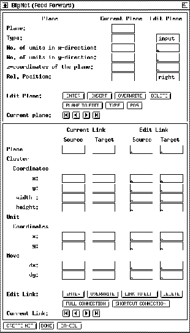

BigNet subdivides a net into several planes. The input layer, the
output layer and every hidden layer are called a plane in the
notation of BigNet. A plane is a two-dimensional array of units.
Every single unit within a plane can be addressed by its coordinates.
The unit in the upper left corner of every plane has the coordinates
(1,1). A group of units within a plane, ordered in the shape of a
square, is called a cluster. The position of a cluster is
determined by the coordinates of its upper left corner and its
expansion in the x direction (width) and y direction (height)
(fig.  ).
).

BigNet creates a net in two steps:
Both editor parts are subdivided into an input part (Edit plane, Edit link) and into a display part for control purposes (Current plane, Current link). The input data of both editors is stored, as described above, in the plane list and in the link list. After pressing , , or the input data is added to the corresponding editor list. In the control part one list element is always visible. The buttons xgui_bignet/bn_button_first.ps, xgui_bignet/bn_button_prev.ps, xgui_bignet/bn_button_next.ps, and xgui_bignet/bn_button_last.ps enable moving around in the list. The operations DELETE, INSERT, OVERWRITE, CURRENT PLANE TO EDITOR and CURRENT LINK TO EDITOR refer to the current element. Input data is only entered in the editor list if it is correct, otherwise nothing happens.